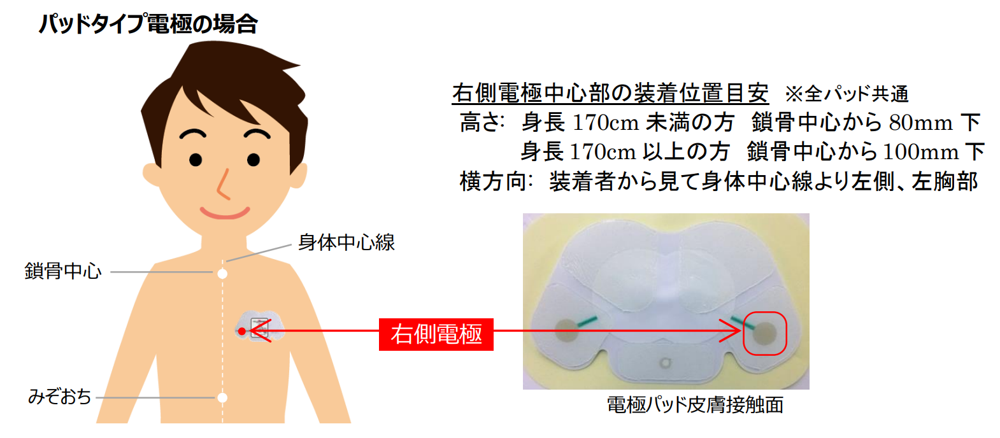

QIDS-J + ECG
計測情報の入力
実験用：被験者情報を入力してください（ID 以外は任意・未回答可）
QIDS-J
簡易抑うつ症状尺度
Quick Inventory of Depressive Symptomatology — 日本語版
このチェックについて
本測定で収集した個人情報はアルゴリズム開発のみに使用し、他用途への使用はしません。
所要時間
およそ 5 〜 10 分。1 問ずつ画面に表示されます。
実験説明
センサーの装着
- ① 心電（ECG）センサー（myBeat）：パッドタイプ電極を胸部に装着し、電源を ON にしてください。装着後は無線で心電を連続記録します。

右側電極 中心部の装着位置目安（全パッド共通）
高さ：身長 170cm 未満 → 鎖骨中心から 80mm 下／170cm 以上 → 鎖骨中心から 100mm 下
横方向：装着者から見て身体中心線より 左側（左胸部） - ② カメラ（頭部の位置）：顔がカメラ映像の中央に来るように座り、画面を正面から見てください。顔全体が枠内に収まる距離を保ち、測定中は大きく動かないようにしてください。
実験の流れ
📝被験者情報
❤️センサー装着・同意
🧘安静時測定（前）約3分
❓質問への回答
🧘安静時測定（後）約3分
📊結果・保存
※ 安静時測定の間は、画面の中央を見つめ、リラックスして大きく動かないようにしてください。心電と映像はこの間も記録されています。
同意事項
カメラ設定（オプション）
※ お使いのカメラが対応していない設定は、自動的に近い値に調整されます。実際に録画された解像度・fps は録画後にセッションログの device.camera で確認できます。
QIDS-J で 6 点以上が 2 週間以上続く場合、または Q12（死や自殺についての考え）で点数がついた場合は、できるだけ早く医療機関・専門家にご相談ください。
表情のベースラインを記録
これから 3 秒間、自然な状態（力を抜いたニュートラルな表情）を録画します。終了後の解析時に、このベースライン区間と比較して表情の変化量を正確に算出します。
3
画面を正面から見て、リラックスしてお待ちください。
安静
3:00
1 / 16
睡眠
Q1
質問タイトル
結果
回答ありがとうございました
0/27
重症度
—
—
手動エクスポート / 表情抽出（通常は不要：全データは自動保存されます）
録画データ
録画と回答データは自動保存済みです。必要なら個別にもダウンロードできます。表情の特徴点抽出は後日まとめて別途行う想定です。
特徴点の抽出・分析
録画を MediaPipe FaceLandmarker に通し、478 点 3D ランドマーク・52 ブレンドシェイプ・頭部姿勢を抽出します。処理時間は GPU 性能に依存（5 分の録画で 4〜15 分目安）。
※ JSON フォーマット仕様と解析例は utils/ 配下を参照してください。
※ 本結果は医学的診断ではありません。気になる症状が続く場合は、専門の医療機関へご相談ください。